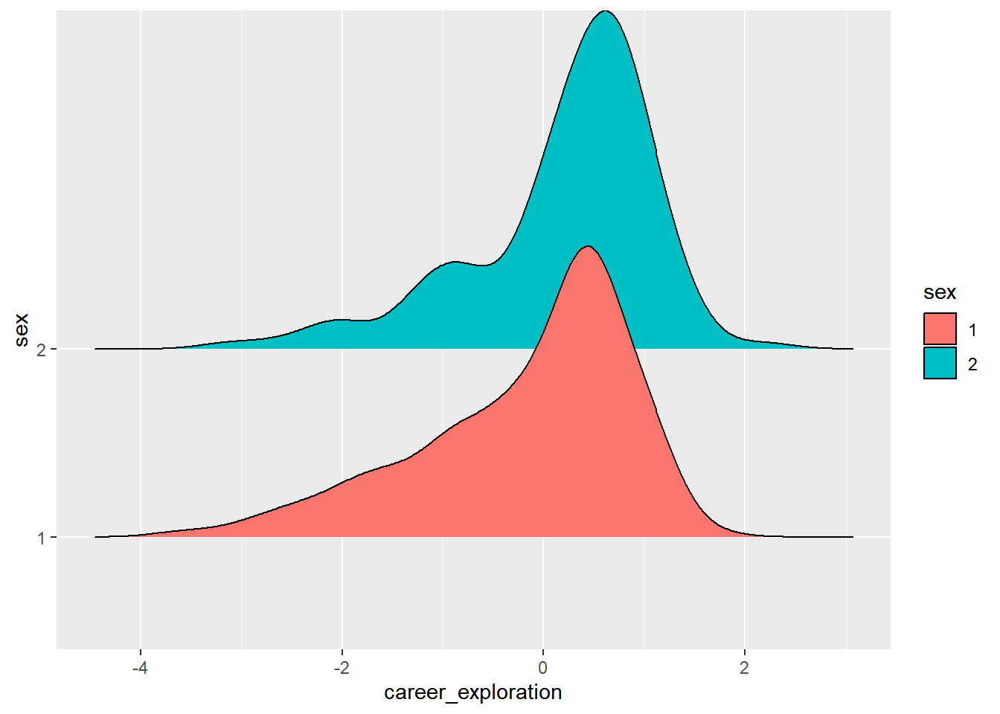

第 42 章 探索性数据分析-大学生职业决策
42.1 预备知识
example <-
tibble::tribble(
~name, ~english, ~chinese, ~math, ~sport, ~psy, ~edu,
"A", 133, 100, 102, 56, 89, 89,
"B", 120, 120, 86, 88, 45, 75,
"C", 98, 109, 114, 87, NA, 84,
"D", 120, 78, 106, 68, 86, 69,
"E", 110, 99, 134, 98, 75, 70,
"F", NA, 132, 130, NA, 68, 88
)
example## # A tibble: 6 x 7
## name english chinese math sport psy edu
## <chr> <dbl> <dbl> <dbl> <dbl> <dbl> <dbl>
## 1 A 133 100 102 56 89 89
## 2 B 120 120 86 88 45 75
## 3 C 98 109 114 87 NA 84
## 4 D 120 78 106 68 86 69
## 5 E 110 99 134 98 75 70
## 6 F NA 132 130 NA 68 88# 检查缺失值情况
example %>%
summarise(across(everything(), ~ sum(is.na(.x)))) %>%
pivot_longer(
cols = everything(),
names_to = "subject",
values_to = "NA"
)## # A tibble: 7 x 2
## subject `NA`
## <chr> <int>
## 1 name 0
## 2 english 1
## 3 chinese 0
## 4 math 0
## 5 sport 1
## 6 psy 1
## 7 edu 0# 预处理-丢弃缺失值
example %>%
drop_na()## # A tibble: 4 x 7
## name english chinese math sport psy edu
## <chr> <dbl> <dbl> <dbl> <dbl> <dbl> <dbl>
## 1 A 133 100 102 56 89 89
## 2 B 120 120 86 88 45 75
## 3 D 120 78 106 68 86 69
## 4 E 110 99 134 98 75 70# 预处理-使用均值代替缺失值
d <- example %>%
mutate(
across(
where(is.numeric),
~ if_else(is.na(.),
mean(., na.rm = T),
.
)
)
)
# 预处理-计算总分和均分
d %>%
rowwise() %>%
mutate(
total = sum(c_across(-name)),
mean = mean(c_across(-name))
) %>%
select(name, total, mean)## # A tibble: 6 x 3
## # Rowwise:
## name total mean
## <chr> <dbl> <dbl>
## 1 A 569 163.
## 2 B 534 153.
## 3 C 565. 161.
## 4 D 527 151.
## 5 E 586 167.
## 6 F 614. 175.# 预处理-数据标准化
standard <- function(x) {
(x - mean(x)) / sd(x)
}
d %>%
mutate(
across(where(is.numeric), standard)
)## # A tibble: 6 x 7
## name english chinese math sport psy edu
## <chr> <dbl> <dbl> <dbl> <dbl> <dbl> <dbl>
## 1 A 1.44 -0.339 -0.555 -1.54 1.04 1.10
## 2 B 0.326 0.731 -1.44 0.566 -1.75 -0.464
## 3 C -1.56 0.143 0.111 0.500 0 0.538
## 4 D 0.326 -1.51 -0.333 -0.750 0.852 -1.13
## 5 E -0.531 -0.392 1.22 1.22 0.153 -1.02
## 6 F 0 1.37 0.999 0 -0.292 0.98442.2 正式开始
我们观察数据发现有一些需要注意的地方。
| 事项 | 问题 | 解决办法 |
|---|---|---|
| 文件名 | excel的文件名是中文 | 用英文，比如 data.xlsx |
| 列名 | 列名中有-号，大小写不统一 | 规范列名，或用janitor::clean_names()偷懒 |
| 预处理 | 直接在原始数据中新增 | 不要在原始数据上改动，统计工作可以在R里实现 |
| 文件管理 | 没有层级 | 新建data文件夹装数据，与code.Rmd并列 |
data <- readxl::read_excel("datas/career-decision.xlsx",
skip = 1
) %>% # 跳过第一行
janitor::clean_names() %>%
select(1:61)## Warning in FUN(X[[i]], ...): strings not representable in native
## encoding will be translated to UTF-8## Warning in FUN(X[[i]], ...): unable to translate '<U+00C4>' to native
## encoding## Warning in FUN(X[[i]], ...): unable to translate '<U+00D6>' to native
## encoding## Warning in FUN(X[[i]], ...): unable to translate '<U+00E4>' to native
## encoding## Warning in FUN(X[[i]], ...): unable to translate '<U+00F6>' to native
## encoding## Warning in FUN(X[[i]], ...): unable to translate '<U+00DF>' to native
## encoding## Warning in FUN(X[[i]], ...): unable to translate '<U+00C6>' to native
## encoding## Warning in FUN(X[[i]], ...): unable to translate '<U+00E6>' to native
## encoding## Warning in FUN(X[[i]], ...): unable to translate '<U+00D8>' to native
## encoding## Warning in FUN(X[[i]], ...): unable to translate '<U+00F8>' to native
## encoding## Warning in FUN(X[[i]], ...): unable to translate '<U+00C5>' to native
## encoding## Warning in FUN(X[[i]], ...): unable to translate '<U+00E5>' to native
## encodingglimpse(data)## Rows: 304
## Columns: 61
## $ sex <dbl> 1, 1, 2, 2, 2, 1, 1, 1, 1, 1, 1, 1, 1, 1, 2, 2, 1, 1,~
## $ majoy <dbl> 4, 4, 4, 4, 4, 1, 4, 4, 4, 4, 4, 4, 1, 4, 2, 4, 4, 4,~
## $ grade <dbl> 4, 4, 4, 4, 4, 4, 4, 4, 4, 4, 4, 4, 4, 4, 4, 4, 4, 4,~
## $ from <dbl> 2, 1, 2, 1, 1, 3, 3, 1, 3, 2, 3, 1, 1, 1, 2, 3, 2, 1,~
## $ z1 <dbl> 3, 2, 5, 3, 3, 3, 3, 3, 2, 3, 3, 2, 4, 1, 4, 4, 4, 4,~
## $ z2 <dbl> 2, 2, 3, 1, 2, 3, 1, 3, 2, 4, 3, 2, 2, 1, 4, 3, 2, 3,~
## $ z3 <dbl> 2, 2, 3, 1, 3, 3, 2, 2, 3, 4, 4, 2, 4, 2, 3, 4, 2, 3,~
## $ z4 <dbl> 2, 2, 3, 3, 2, 3, 1, 4, 4, 4, 3, 3, 4, 2, 4, 4, 3, 4,~
## $ z5 <dbl> 2, 2, 4, 2, 4, 3, 1, 4, 4, 4, 4, 3, 4, 2, 4, 4, 3, 4,~
## $ z6 <dbl> 3, 4, 4, 4, 4, 4, 4, 4, 5, 4, 4, 4, 4, 3, 4, 4, 4, 5,~
## $ z7 <dbl> 2, 2, 3, 1, 2, 4, 1, 2, 2, 4, 2, 3, 4, 1, 3, 3, 3, 3,~
## $ z8 <dbl> 3, 3, 4, 3, 3, 5, 4, 4, 4, 4, 4, 4, 4, 3, 4, 4, 4, 5,~
## $ z9 <dbl> 3, 4, 4, 4, 2, 5, 4, 2, 4, 3, 4, 4, 4, 3, 4, 4, 4, 5,~
## $ z10 <dbl> 3, 3, 4, 4, 3, 4, 4, 3, 4, 4, 4, 4, 4, 2, 4, 4, 4, 5,~
## $ z11 <dbl> 3, 2, 4, 3, 3, 4, 3, 3, 3, 4, 4, 4, 4, 1, 3, 3, 4, 4,~
## $ z12 <dbl> 2, 1, 3, 2, 2, 3, 1, 4, 1, 3, 2, 4, 4, 3, 4, 3, 3, 2,~
## $ z13 <dbl> 2, 2, 3, 3, 4, 3, 2, 3, 1, 4, 2, 4, 4, 1, 4, 3, 3, 2,~
## $ z14 <dbl> 1, 2, 3, 3, 3, 3, 1, 4, 1, 4, 2, 4, 4, 1, 4, 3, 3, 4,~
## $ z15 <dbl> 2, 2, 4, 1, 3, 3, 1, 4, 4, 3, 3, 3, 4, 2, 4, 4, 3, 4,~
## $ z16 <dbl> 2, 1, 3, 1, 2, 3, 1, 3, 2, 4, 2, 4, 3, 1, 3, 3, 2, 4,~
## $ z17 <dbl> 3, 2, 3, 3, 3, 3, 1, 3, 3, 4, 3, 3, 4, 2, 3, 4, 2, 4,~
## $ z18 <dbl> 2, 2, 3, 3, 2, 3, 1, 2, 2, 3, 2, 2, 4, 2, 3, 4, 3, 2,~
## $ j1 <dbl> 3, 2, 3, 3, 3, 3, 2, 3, 3, 3, 2, 3, 4, 2, 4, 5, 4, 4,~
## $ j2 <dbl> 2, 2, 4, 3, 3, 3, 2, 3, 3, 3, 3, 4, 4, 2, 3, 4, 4, 4,~
## $ j3 <dbl> 2, 2, 4, 2, 2, 3, 3, 3, 3, 4, 3, 3, 4, 2, 3, 4, 3, 2,~
## $ j4 <dbl> 3, 2, 4, 2, 3, 3, 2, 3, 2, 3, 4, 3, 4, 2, 2, 3, 2, 2,~
## $ j5 <dbl> 3, 2, 4, 2, 4, 3, 2, 3, 4, 4, 5, 4, 4, 2, 3, 3, 2, 2,~
## $ j6 <dbl> 3, 2, 3, 4, 4, 3, 2, 3, 3, 3, 3, 4, 4, 2, 2, 4, 4, 2,~
## $ j7 <dbl> 2, 2, 3, 2, 3, 3, 1, 2, 3, 4, 4, 3, 3, 3, 4, 2, 4, 2,~
## $ j8 <dbl> 3, 2, 4, 3, 4, 3, 2, 3, 4, 4, 4, 3, 4, 2, 3, 4, 4, 2,~
## $ j9 <dbl> 2, 2, 4, 2, 3, 3, 2, 3, 3, 3, 4, 4, 4, 2, 3, 4, 4, 2,~
## $ j10 <dbl> 3, 2, 3, 4, 3, 4, 1, 3, 3, 4, 4, 4, 4, 2, 3, 4, 4, 3,~
## $ j11 <dbl> 3, 2, 4, 2, 2, 3, 2, 3, 3, 4, 4, 4, 3, 2, 3, 4, 4, 3,~
## $ j12 <dbl> 2, 2, 4, 4, 3, 4, 2, 3, 3, 4, 4, 4, 4, 2, 2, 3, 3, 2,~
## $ j13 <dbl> 2, 2, 4, 3, 3, 3, 1, 4, 2, 3, 4, 4, 4, 2, 2, 4, 3, 3,~
## $ j14 <dbl> 2, 2, 3, 3, 2, 2, 4, 2, 2, 4, 2, 3, 4, 3, 2, 4, 3, 3,~
## $ j15 <dbl> 2, 2, 3, 2, 2, 3, 2, 4, 3, 5, 4, 3, 3, 2, 3, 3, 3, 3,~
## $ j16 <dbl> 2, 2, 3, 2, 3, 2, 2, 3, 3, 5, 4, 3, 4, 2, 3, 4, 4, 3,~
## $ j17 <dbl> 3, 1, 3, 3, 2, 3, 3, 2, 4, 4, 2, 3, 4, 3, 4, 4, 4, 4,~
## $ j18 <dbl> 3, 2, 3, 4, 4, 4, 3, 4, 4, 4, 4, 4, 4, 3, 4, 4, 4, 4,~
## $ j19 <dbl> 3, 2, 4, 3, 3, 3, 2, 3, 3, 3, 4, 3, 4, 2, 3, 4, 4, 4,~
## $ j20 <dbl> 2, 3, 3, 4, 3, 4, 5, 4, 4, 4, 4, 4, 3, 3, 4, 4, 3, 4,~
## $ j21 <dbl> 3, 2, 4, 3, 4, 4, 2, 3, 4, 4, 4, 4, 4, 2, 3, 4, 4, 4,~
## $ j22 <dbl> 3, 2, 3, 3, 2, 2, 2, 3, 3, 2, 2, 3, 3, 2, 4, 3, 4, 3,~
## $ j23 <dbl> 4, 3, 4, 2, 3, 2, 1, 3, 3, 2, 2, 4, 2, 2, 3, 3, 3, 3,~
## $ j24 <dbl> 4, 3, 4, 4, 2, 3, 2, 3, 2, 4, 4, 4, 4, 3, 3, 3, 4, 3,~
## $ j25 <dbl> 2, 2, 3, 3, 3, 2, 3, 3, 2, 3, 4, 4, 3, 3, 3, 4, 4, 4,~
## $ j26 <dbl> 2, 2, 4, 4, 3, 3, 3, 4, 3, 4, 4, 4, 4, 2, 2, 4, 4, 4,~
## $ j27 <dbl> 3, 3, 3, 3, 2, 3, 4, 2, 5, 4, 2, 4, 4, 3, 3, 4, 4, 3,~
## $ j28 <dbl> 2, 2, 4, 3, 3, 4, 4, 3, 3, 4, 4, 4, 4, 2, 4, 3, 4, 4,~
## $ j29 <dbl> 2, 2, 4, 4, 3, 3, 2, 3, 3, 3, 4, 4, 4, 2, 3, 4, 4, 2,~
## $ j30 <dbl> 3, 2, 4, 3, 4, 4, 3, 3, 5, 3, 4, 4, 4, 2, 4, 4, 3, 3,~
## $ j31 <dbl> 3, 2, 2, 4, 3, 3, 3, 2, 4, 2, 3, 4, 4, 2, 3, 4, 4, 2,~
## $ j32 <dbl> 3, 2, 4, 2, 3, 3, 3, 2, 3, 2, 4, 3, 4, 2, 3, 4, 4, 2,~
## $ j33 <dbl> 2, 2, 4, 3, 3, 3, 2, 4, 3, 4, 4, 4, 4, 2, 3, 3, 4, 4,~
## $ j34 <dbl> 2, 2, 4, 2, 2, 3, 3, 3, 4, 4, 2, 4, 4, 2, 3, 4, 4, 3,~
## $ j35 <dbl> 3, 3, 2, 3, 3, 3, 3, 2, 2, 4, 4, 5, 4, 3, 4, 4, 5, 3,~
## $ j36 <dbl> 3, 3, 4, 3, 3, 4, 4, 3, 5, 4, 4, 4, 4, 4, 3, 4, 4, 4,~
## $ j37 <dbl> 2, 2, 3, 2, 4, 4, 2, 2, 3, 3, 4, 2, 4, 2, 4, 4, 4, 3,~
## $ j38 <dbl> 3, 2, 4, 3, 3, 4, 3, 3, 4, 3, 3, 2, 4, 2, 2, 4, 4, 2,~
## $ j39 <dbl> 2, 2, 4, 2, 3, 3, 2, 3, 3, 3, 4, 3, 3, 2, 2, 4, 3, 2,~42.2.1 检查缺失值
data %>%
summarise(
across(everything(), ~ sum(is.na(.)))
) %>%
pivot_longer(
cols = everything(),
names_to = "subject",
values_to = "NAs"
)## # A tibble: 61 x 2
## subject NAs
## <chr> <int>
## 1 sex 0
## 2 majoy 0
## 3 grade 0
## 4 from 0
## 5 z1 0
## 6 z2 0
## 7 z3 0
## 8 z4 0
## 9 z5 0
## 10 z6 0
## # ... with 51 more rows发现没有缺失值，我们继续下一步。
42.2.2 数据预处理
采用李克特式5点计分
d <- data %>%
rowwise() %>%
mutate(
environment_exploration = sum(c_across(z1:z5)),
self_exploration = sum(c_across(z6:z9)),
objective_system_exploration = sum(c_across(z10:z15)),
info_quantity_exploration = sum(c_across(z16:z18)),
self_evaluation = sum(c_across(j1:j6)),
information_collection = sum(c_across(j7:j15)),
target_select = sum(c_across(j16:j24)),
formulate = sum(c_across(j25:j32)),
problem_solving = sum(c_across(j33:j39)),
career_exploration = sum(c_across(z1:z18)),
career_decision_making = sum(c_across(j1:j39))
) %>%
select(-starts_with("z"), -starts_with("j")) %>%
ungroup() %>%
mutate(pid = 1:n(), .before = sex) %>%
mutate(
across(c(pid, sex, majoy, grade, from), as_factor)
)
glimpse(d)## Rows: 304
## Columns: 16
## $ pid <fct> 1, 2, 3, 4, 5, 6, 7, 8, 9, 10,~
## $ sex <fct> 1, 1, 2, 2, 2, 1, 1, 1, 1, 1, ~
## $ majoy <fct> 4, 4, 4, 4, 4, 1, 4, 4, 4, 4, ~
## $ grade <fct> 4, 4, 4, 4, 4, 4, 4, 4, 4, 4, ~
## $ from <fct> 2, 1, 2, 1, 1, 3, 3, 1, 3, 2, ~
## $ environment_exploration <dbl> 11, 10, 18, 10, 14, 15, 8, 16,~
## $ self_exploration <dbl> 11, 13, 15, 12, 11, 18, 13, 12~
## $ objective_system_exploration <dbl> 13, 12, 21, 16, 18, 20, 12, 21~
## $ info_quantity_exploration <dbl> 7, 5, 9, 7, 7, 9, 3, 8, 7, 11,~
## $ self_evaluation <dbl> 16, 12, 22, 16, 19, 18, 13, 18~
## $ information_collection <dbl> 21, 18, 32, 25, 25, 28, 17, 27~
## $ target_select <dbl> 27, 20, 31, 28, 26, 27, 22, 28~
## $ formulate <dbl> 20, 17, 28, 26, 24, 25, 25, 22~
## $ problem_solving <dbl> 17, 16, 25, 18, 21, 24, 19, 20~
## $ career_exploration <dbl> 42, 40, 63, 45, 50, 62, 36, 57~
## $ career_decision_making <dbl> 101, 83, 138, 113, 115, 122, 9~42.2.3 标准化数据
standard <- function(x) {
(x - mean(x)) / sd(x)
}
d <- d %>%
mutate(
across(where(is.numeric), standard)
)
d## # A tibble: 304 x 16
## pid sex majoy grade from environment_explor~ self_exploration
## <fct> <fct> <fct> <fct> <fct> <dbl> <dbl>
## 1 1 1 4 4 2 -1.63 -1.58
## 2 2 1 4 4 1 -1.87 -0.723
## 3 3 2 4 4 2 0.0802 0.132
## 4 4 2 4 4 1 -1.87 -1.15
## 5 5 2 4 4 1 -0.895 -1.58
## 6 6 1 1 4 3 -0.651 1.41
## 7 7 1 4 4 3 -2.36 -0.723
## 8 8 1 4 4 1 -0.407 -1.15
## 9 9 1 4 4 3 -0.651 0.132
## 10 10 1 4 4 2 0.324 0.132
## # ... with 294 more rows, and 9 more variables:
## # objective_system_exploration <dbl>,
## # info_quantity_exploration <dbl>, self_evaluation <dbl>,
## # information_collection <dbl>, target_select <dbl>,
## # formulate <dbl>, problem_solving <dbl>,
## # career_exploration <dbl>, career_decision_making <dbl>42.3 探索数据
42.3.2 不同性别、年纪、生源地、专业下，各指标的分布差异
- 性别：因为性别变量是男女，仅仅2组，所以检查男女在各自指标上的均值差异，可以用T检验。
d %>%
group_by(sex) %>%
summarise(
across(where(is.numeric), mean)
)## # A tibble: 2 x 12
## sex environment_exploration self_exploration objective_system_ex~
## <fct> <dbl> <dbl> <dbl>
## 1 1 -0.147 -0.0829 -0.180
## 2 2 0.165 0.0933 0.202
## # ... with 8 more variables: info_quantity_exploration <dbl>,
## # self_evaluation <dbl>, information_collection <dbl>,
## # target_select <dbl>, formulate <dbl>, problem_solving <dbl>,
## # career_exploration <dbl>, career_decision_making <dbl># 山脊图是可视化图形的一种，
# 可以展示不同类别数据在同一因素的不同水平下的分布差异。
library(ggridges)
d %>%
ggplot(aes(x = career_exploration, y = sex, fill = sex)) +
geom_density_ridges()
# t检验
t_test_eq <- t.test(career_exploration ~ sex,
data = d,
var.equal = TRUE)
t_test_eq##
## Two Sample t-test
##
## data: career_exploration by sex
## t = -3, df = 302, p-value = 0.001
## alternative hypothesis: true difference in means between group 1 and group 2 is not equal to 0
## 95 percent confidence interval:
## -0.589 -0.144
## sample estimates:
## mean in group 1 mean in group 2
## -0.173 0.194report(t_test_eq)## Warning in effectsize.htest(x, type = type, verbose = verbose, ...):
## Unable to retrieve data from htest object. Using t_to_d()
## approximation.##
##
## The Two Sample t-test testing the difference of career_exploration by sex (mean in group 1 = -0.17, mean in group 2 = 0.19) suggests that the effect is negative, statistically significant, and small (difference = -0.37, 95% CI [-0.59, -0.14], t(302) = -3.24, p = 0.001; Cohen's d = -0.37, 95% CI [-0.60, -0.15])model <- d %>%
pivot_longer(
cols = -c(pid, sex, majoy, grade, from),
names_to = "index",
values_to = "value"
) %>%
group_by(index) %>%
summarise(
broom::tidy(t.test(value ~ sex, data = cur_data())
)) %>%
select(index, estimate, statistic, p.value) %>%
arrange(p.value)
report(model)## The data contains 11 observations of the following 4 variables:
##
## - index: 11 entries, such as career_decision_making (n = 1); career_exploration (n = 1); environment_exploration (n = 1) and 8 others (0 missing)
## - estimate: n = 11, Mean = -0.38, SD = 0.09, Median = -0.40, MAD = 0.07, range: [-0.49, -0.18], Skewness = 1.02, Kurtosis = 0.96, 0 missing
## - statistic: n = 11, Mean = -3.39, SD = 0.87, Median = -3.65, MAD = 0.63, range: [-4.53, -1.54], Skewness = 0.93, Kurtosis = 0.72, 0 missing
## - p.value: n = 11, Mean = 0.01, SD = 0.04, Median = 3.15e-04, MAD = 4.54e-04, range: [8.62e-06, 0.13], Skewness = 3.22, Kurtosis = 10.50, 0 missing42.3.3 来自不同地方的学生在职业探索上的不同
d %>% pivot_longer(
cols = -c(pid, sex, majoy, grade, from),
names_to = "index",
values_to = "value"
) %>%
group_by(index) %>%
summarise(
broom::tidy(aov(value ~ from), data = cur_data())
) %>%
select(index, term, statistic, p.value) %>%
filter(term != "Residuals") %>%
arrange(p.value)## # A tibble: 11 x 4
## # Groups: index [11]
## index term statistic p.value
## <chr> <chr> <dbl> <dbl>
## 1 problem_solving from 14.6 0.000000918
## 2 career_decision_making from 14.2 0.00000126
## 3 formulate from 12.2 0.00000781
## 4 information_collection from 10.2 0.0000527
## 5 self_evaluation from 8.91 0.000174
## 6 target_select from 8.45 0.000270
## 7 info_quantity_exploration from 5.78 0.00344
## 8 career_exploration from 4.48 0.0121
## 9 objective_system_exploration from 4.06 0.0181
## 10 environment_exploration from 3.69 0.0260
## 11 self_exploration from 0.699 0.498